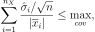
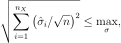

ExpectationSimulationAlgorithm¶
- class ExpectationSimulationAlgorithm(*args)¶
Expectation computation using sampling.
Incremental Monte Carlo sampling algorithm to estimate the mean of a random vector
 .
.- Parameters
- X
RandomVector The random vector to study.
- X
Notes
Let be a random vector. This algorithm estimates using the smallest possible sample size which satisfies pre-defined stopping rules. It increases the sample size
 incrementally until a stopping criterion is met.
Hence, both the mean and the variance must be finite.
For example, consider the Student distribution with
incrementally until a stopping criterion is met.
Hence, both the mean and the variance must be finite.
For example, consider the Student distribution with  degrees of freedom.
If (where the expectation is undefined)
or (where the variance is undefined),
then the algorithm cannot succeed.
degrees of freedom.
If (where the expectation is undefined)
or (where the variance is undefined),
then the algorithm cannot succeed.The algorithm is based on two nested loops:
the outer loop sets the number of iterations of the algorithm; this can be configured using
setMaximumOuterSampling(),the inner loop sets the number of function calls which can be parallelized; this can be configured using
setBlockSize().
The algorithm allows one to get the best possible performance on distributed supercomputers and multi-core workstations. For example, if the block size is equal to 100, then the sample size is successively equal to 100, 200, etc… Each block of evaluation of the outputs can be parallelized, which may improve the performance of the algorithm. We suggest to set the block size as a multiple of the number of cores.
The algorithm stops either when the maximum number of outer iterations is reached or when the target precision is met. The latter stopping criterion is based on either the coefficient of variation of the sample mean (relative criterion) or the standard deviation of the sample mean (absolute criterion).
We consider independent realizations , …, of the random vector
.
We estimate with the sample mean:We estimate for with the unbiased sample variance:
for .
The expected value of the sample mean is:
and, since the observations are independent, the variance of the sample mean is:
for , since the observations are independent.
Moreover, we can estimate the standard deviation of the sample mean with:
for .
If the expectation is nonzero, the coefficient of variation of the sample mean is:
for .
We can estimate it with

for .
When the sample size
increases, the sample standard deviation and the sample coefficient of variation decrease to zero at the Monte-Carlo rate of .There are 3 mathematical stopping criteria available:
through an operator on the componentwise coefficients of variation (by default),
through an operator on the componentwise standard deviations,
on the maximum standard deviation per component.
A low coefficient of variation guarantees relative accuracy, while a low standard deviation guarantees absolute accuracy.
If the chosen condition is found to be true, the algorithm stops.
Let
 be the dimension of the random vector .
Let be the maximum coefficient of variation.
The criterion on the componentwise coefficients of variation is defined using either:
be the dimension of the random vector .
Let be the maximum coefficient of variation.
The criterion on the componentwise coefficients of variation is defined using either:the maximum (by default):
the norm-1:

the norm-2:
or disabled.
The type of operator on the coefficient of variation is set using
setCoefficientOfVariationCriterionType().The default type is set by the ExpectationSimulationAlgorithm-DefaultCoefficientOfVariationCriterionType key of the
ResourceMap.The threshold can be set using
setMaximumCoefficientOfVariation().Let be the maximum value of the standard deviation. The criterion on the componentwise standard deviations is defined using either:
the maximum (by default):
the norm-1:
the norm-2:

or disabled.
The type of operator on the coefficient of variation can be set using
setStandardDeviationCriterionType().The default type is set by the ExpectationSimulationAlgorithm-DefaultStandardDeviationCriterionType key of the
ResourceMap.The threshold can be set using
setMaximumStandardDeviation().Let be the componentwise maximum standard deviations. The criterion on the maximum deviation per component is defined by:
for .
The threshold vector can be set using
setMaximumStandardDeviationPerComponent().By default this criterion is disabled.
The default values of the parameters are based on the following keys of the
ResourceMap:SimulationAlgorithm-DefaultMaximumOuterSampling,
SimulationAlgorithm-DefaultMaximumCoefficientOfVariation,
SimulationAlgorithm-DefaultMaximumStandardDeviation.
In general, criteria based on coefficients of variation (C.O.V.) should be used because they guarantee a relative accuracy on the estimate of the mean. However, we may happen to estimate an expected value equal to zero (perhaps for teaching or research purposes). The default value of SimulationAlgorithm-DefaultMaximumStandardDeviation is
 , which means that standard deviation-based criteria are disabled by default
(in order to let C.O.V.-based criteria be used by default).
If the expected value of is zero,
the algorithm is likely to reach the maximum number of outer iterations.
If this happens, please configure the maximum standard deviation
in order to match the scale of the random variable at hand.
, which means that standard deviation-based criteria are disabled by default
(in order to let C.O.V.-based criteria be used by default).
If the expected value of is zero,
the algorithm is likely to reach the maximum number of outer iterations.
If this happens, please configure the maximum standard deviation
in order to match the scale of the random variable at hand.Examples
In the following example, we perform at most evaluations of the model. However, the algorithm may stop earlier if the coefficient of variation of the sample mean falls below the threshold.
>>> import openturns as ot >>> ot.RandomGenerator.SetSeed(0) >>> # Create a composite random vector >>> model = ot.SymbolicFunction(['E', 'F', 'L', 'I'], ['-F*L^3/(3*E*I)']) >>> distribution = ot.Normal([50.0, 1.0, 10.0, 5.0], [1.0] * 4, ot.IdentityMatrix(4)) >>> vect = ot.RandomVector(distribution) >>> X = ot.CompositeRandomVector(model, vect) >>> algo = ot.ExpectationSimulationAlgorithm(X) >>> algo.setMaximumOuterSampling(10000) >>> algo.setBlockSize(8) # The number of cores we usually have. >>> algo.setMaximumCoefficientOfVariation(0.01) # 1% C.O.V. >>> algo.run() >>> result = algo.getResult() >>> expectation = result.getExpectationEstimate() >>> print(expectation) [-1.41067]
The following statement retrieves the asymptotically Gaussian distribution of the sample mean. This may be useful for users who want to compute a confidence interval of the sample mean. >>> expectationDistribution = result.getExpectationDistribution()
The following code prints the outer sample (i.e. the number of outer iterations of the algorithm) and the sample size. We see that the algorithm stops based on the accuracy criterion.
>>> outer_sampling = result.getOuterSampling() >>> print('outer_sampling=', outer_sampling) outer_sampling= 1662 >>> block_size = result.getBlockSize() >>> sample_size = outer_sampling * block_size >>> print('sample_size=', sample_size) sample_size= 13296
In the following example, we disable the coefficient of variation criterion. Therefore, the only remaining criterion is based on the number of iterations.
>>> algo = ot.ExpectationSimulationAlgorithm(X) >>> algo.setMaximumOuterSampling(1000) >>> algo.setBlockSize(1) >>> algo.setCoefficientOfVariationCriterionType('NONE') >>> algo.run() >>> result = algo.getResult() >>> outer_sampling = result.getOuterSampling() >>> print('outer_sampling=', outer_sampling) outer_sampling= 1000
In the following example, we compute the mean of a dimension 4 random vector. We use a standard deviation-based stopping criterion with a different threshold for every component. We must disable the coefficient of variation-based stopping criterion, otherwise, in this example, it will trigger first. The comparison with the exact mean is satisfactory, given the relatively small sample size.
>>> from openturns.usecases import cantilever_beam >>> cb = cantilever_beam.CantileverBeam() >>> sigma = cb.distribution.getStandardDeviation() >>> print('sigma=', sigma) sigma= [1.73582e+09,30,0.0288675,7.10585e-09] >>> componentwise_max_sigma = sigma / 32.0 >>> print('componentwise_max_sigma=', componentwise_max_sigma) componentwise_max_sigma= [5.42445e+07,0.9375,0.00090211,2.22058e-10] >>> X = ot.RandomVector(cb.distribution) >>> algo = ot.ExpectationSimulationAlgorithm(X) >>> algo.setMaximumOuterSampling(1000) >>> algo.setBlockSize(8) >>> algo.setCoefficientOfVariationCriterionType('NONE') >>> algo.setMaximumStandardDeviationPerComponent(componentwise_max_sigma) >>> algo.run() >>> result = algo.getResult() >>> expectation = result.getExpectationEstimate() >>> print(expectation) [6.7125e+10,298.637,2.55074,1.45427e-07] >>> print(cb.distribution.getMean()) [6.70455e+10,300,2.55,1.45385e-07] >>> outer_sampling = result.getOuterSampling() >>> print('outer_sampling=', outer_sampling) outer_sampling= 126
Methods
drawExpectationConvergence(*args)Draw the expectation convergence at a given level.
Accessor to the block size.
Accessor to the object's name.
Accessor to the criterion operator.
Accessor to the convergence strategy.
getId()Accessor to the object's id.
Accessor to the maximum coefficient of variation.
Accessor to the maximum sample size.
Accessor to the maximum standard deviation.
Accessor to the maximum standard deviation.
getName()Accessor to the object's name.
Accessor to the random vector.
Accessor to the result.
Accessor to the object's shadowed id.
Accessor to the criterion operator.
Accessor to verbosity.
Accessor to the object's visibility state.
hasName()Test if the object is named.
Test if the object has a distinguishable name.
run()Launch simulation.
setBlockSize(blockSize)Accessor to the block size.
Accessor to the criterion operator.
setConvergenceStrategy(convergenceStrategy)Accessor to the convergence strategy.
Accessor to the maximum coefficient of variation.
setMaximumOuterSampling(maximumOuterSampling)Accessor to the maximum sample size.
Accessor to the maximum standard deviation.
Accessor to the maximum standard deviation.
setName(name)Accessor to the object's name.
setProgressCallback(*args)Set up a progress callback.
setShadowedId(id)Accessor to the object's shadowed id.
setStandardDeviationCriterionType(criterionType)Accessor to the criterion operator.
setStopCallback(*args)Set up a stop callback.
setVerbose(verbose)Accessor to verbosity.
setVisibility(visible)Accessor to the object's visibility state.
- __init__(*args)¶
- drawExpectationConvergence(*args)¶
Draw the expectation convergence at a given level.
- Parameters
- marginalIndexint
Index of the random vector component to consider
- levelfloat, optional
The expectation convergence is drawn at this given confidence length level. By default level is 0.95.
- Returns
- grapha
Graph expectation convergence graph
- grapha
- getBlockSize()¶
Accessor to the block size.
- Returns
- blockSizeint
Number of terms in the probability simulation estimator grouped together. It is set by default to 1.
- getClassName()¶
Accessor to the object’s name.
- Returns
- class_namestr
The object class name (object.__class__.__name__).
- getCoefficientOfVariationCriterionType()¶
Accessor to the criterion operator.
- Returns
- resultstr
The criterion operator.
- getConvergenceStrategy()¶
Accessor to the convergence strategy.
- Returns
- storage_strategy
HistoryStrategy Storage strategy used to store the values of the probability estimator and its variance during the simulation algorithm.
- storage_strategy
- getId()¶
Accessor to the object’s id.
- Returns
- idint
Internal unique identifier.
- getMaximumCoefficientOfVariation()¶
Accessor to the maximum coefficient of variation.
- Returns
- coefficientfloat
Maximum coefficient of variation of the simulated sample.
- getMaximumOuterSampling()¶
Accessor to the maximum sample size.
- Returns
- outerSamplingint
Maximum number of groups of terms in the probability simulation estimator.
- getMaximumStandardDeviation()¶
Accessor to the maximum standard deviation.
- Returns
- sigmafloat,

Maximum standard deviation of the estimator.
- sigmafloat,
- getMaximumStandardDeviationPerComponent()¶
Accessor to the maximum standard deviation.
- Returns
- sigmaMaxsequence of float
The maximum standard deviation on each component.
- getName()¶
Accessor to the object’s name.
- Returns
- namestr
The name of the object.
- getRandomVector()¶
Accessor to the random vector.
- Returns
- X
RandomVector Random vector we want to study.
- X
- getResult()¶
Accessor to the result.
- Returns
- result
ExpectationSimulationResult The simulation result.
- result
- getShadowedId()¶
Accessor to the object’s shadowed id.
- Returns
- idint
Internal unique identifier.
- getStandardDeviationCriterionType()¶
Accessor to the criterion operator.
- Returns
- resultstr
The criterion operator.
- getVerbose()¶
Accessor to verbosity.
- Returns
- verbosity_enabledbool
If True, the computation is verbose. By default it is verbose.
- getVisibility()¶
Accessor to the object’s visibility state.
- Returns
- visiblebool
Visibility flag.
- hasName()¶
Test if the object is named.
- Returns
- hasNamebool
True if the name is not empty.
- hasVisibleName()¶
Test if the object has a distinguishable name.
- Returns
- hasVisibleNamebool
True if the name is not empty and not the default one.
- run()¶
Launch simulation.
Notes
It launches the simulation on a sample of size at most outerSampling * blockSize, this sample being built by blocks of size blockSize. It allows one to use efficiently the distribution of the computation as well as it allows one to deal with a sample size
 by a combination of blockSize and
outerSampling.
by a combination of blockSize and
outerSampling.
- setBlockSize(blockSize)¶
Accessor to the block size.
- Parameters
- blockSizeint,

Number of terms in the probability simulation estimator grouped together. It is set by default to 1.
- blockSizeint,
Notes
For Monte Carlo, LHS and Importance Sampling methods, this allows one to save space while allowing multithreading, when available we recommend to use the number of available CPUs; for the Directional Sampling, we recommend to set it to 1.
- setCoefficientOfVariationCriterionType(criterionType)¶
Accessor to the criterion operator.
- Parameters
- resultstr
The criterion operator, either NONE, MAX, NORM1 or NORM2.
- setConvergenceStrategy(convergenceStrategy)¶
Accessor to the convergence strategy.
- Parameters
- storage_strategy
HistoryStrategy Storage strategy used to store the values of the probability estimator and its variance during the simulation algorithm.
- storage_strategy
- setMaximumCoefficientOfVariation(maximumCoefficientOfVariation)¶
Accessor to the maximum coefficient of variation.
- Parameters
- coefficientfloat
Maximum coefficient of variation of the simulated sample.
- setMaximumOuterSampling(maximumOuterSampling)¶
Accessor to the maximum sample size.
- Parameters
- outerSamplingint
Maximum number of groups of terms in the probability simulation estimator.
- setMaximumStandardDeviation(maximumStandardDeviation)¶
Accessor to the maximum standard deviation.
- Parameters
- sigmafloat,
Maximum standard deviation of the estimator.
- sigmafloat,
- setMaximumStandardDeviationPerComponent(maximumStandardDeviation)¶
Accessor to the maximum standard deviation.
- Parameters
- sigmaMaxsequence of float
The maximum standard deviation on each component.
If empty, the stopping criterion is not applied.
- setName(name)¶
Accessor to the object’s name.
- Parameters
- namestr
The name of the object.
- setProgressCallback(*args)¶
Set up a progress callback.
Can be used to programmatically report the progress of a simulation.
- Parameters
- callbackcallable
Takes a float as argument as percentage of progress.
Examples
>>> import sys >>> import openturns as ot >>> experiment = ot.MonteCarloExperiment() >>> X = ot.RandomVector(ot.Normal()) >>> Y = ot.CompositeRandomVector(ot.SymbolicFunction(['X'], ['1.1*X']), X) >>> event = ot.ThresholdEvent(Y, ot.Less(), -2.0) >>> algo = ot.ProbabilitySimulationAlgorithm(event, experiment) >>> algo.setMaximumOuterSampling(100) >>> algo.setMaximumCoefficientOfVariation(-1.0) >>> def report_progress(progress): ... sys.stderr.write('-- progress=' + str(progress) + '%\n') >>> algo.setProgressCallback(report_progress) >>> algo.run()
- setShadowedId(id)¶
Accessor to the object’s shadowed id.
- Parameters
- idint
Internal unique identifier.
- setStandardDeviationCriterionType(criterionType)¶
Accessor to the criterion operator.
- Parameters
- resultstr
The criterion operator, either NONE, MAX, NORM1 or NORM2
- setStopCallback(*args)¶
Set up a stop callback.
Can be used to programmatically stop a simulation.
- Parameters
- callbackcallable
Returns an int deciding whether to stop or continue.
Examples
Stop a Monte Carlo simulation algorithm using a time limit
>>> import openturns as ot >>> experiment = ot.MonteCarloExperiment() >>> X = ot.RandomVector(ot.Normal()) >>> Y = ot.CompositeRandomVector(ot.SymbolicFunction(['X'], ['1.1*X']), X) >>> event = ot.ThresholdEvent(Y, ot.Less(), -2.0) >>> algo = ot.ProbabilitySimulationAlgorithm(event, experiment) >>> algo.setMaximumOuterSampling(10000000) >>> algo.setMaximumCoefficientOfVariation(-1.0) >>> timer = ot.TimerCallback(0.1) >>> algo.setStopCallback(timer) >>> algo.run()
- setVerbose(verbose)¶
Accessor to verbosity.
- Parameters
- verbosity_enabledbool
If True, make the computation verbose. By default it is verbose.
- setVisibility(visible)¶
Accessor to the object’s visibility state.
- Parameters
- visiblebool
Visibility flag.